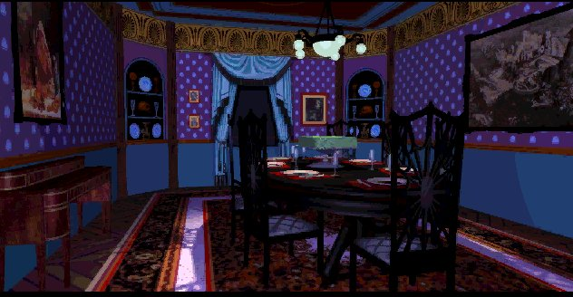

"What the heck is a Trilobyte?"
The diningroom features a collection of files that are related to the 7'th guest. From an update to a musicarchive and from rare beta-versions to animations. Since you've downloaded the entire site with all the extra's, you already have these files. They can be found in the directory of the site. To use them, just click on the file below. Indulge.
Update
This patch is rather special. A lot of people have problems playing the dos-programmed games on their windows-machines. This patch is sort of an upgrade for the dos-version. It makes the game run in Windows. Check out the Knox room where I
made a small tutorial on how to use this patch.
Music archive
Tadie...tata...tada...tatatadaa, you guessed it. A music archive containing a huge amount of midi's.
Stauf nukem
This is a file for Duke nukem 3d. It will give you access to the Stauf mansion in Duke nukem 3d.
Reversed psychology
If you listen to the scene with Elinor in the mirror, you might here something strange. If you then record the sound and
reverse it, this is what you hear. 'No one knows what happened next door. There is no one left to say. If you should see
old man Stauf, get on your knees and pray.' It's the part of the childrens verse that never got in the game. But after
this discovery you find out, that it was in the game all along. Thanks to Christoph Mueller for letting me know about this!
This is the reversed piece of audio in which you can hear the song, this is the wav version.
This is the reversed piece of audio in which you can hear the song, this is the mp3 version.
Animation
This is a nice animation of the beckoning hand.
Lost scenes
This is a zip file with two scenes that were made very early on in the seventh guest proces. Neither of them got in the game.
Very interesting stuff to view. Just read the text file that comes with it on how to use it. Lost of thanks to Maul for finding this out and sending it to me.
Script in french
Ever wanted to read the dialogue of the 7th guest in french? Now you can. Voici, La Septi�me Invite�. Thanks to R�naldo.